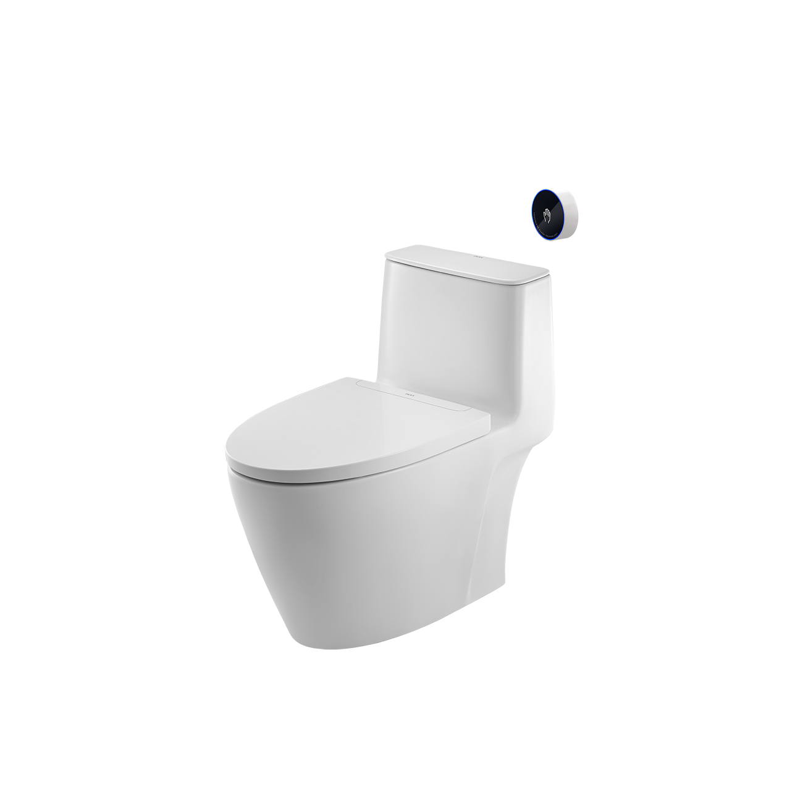
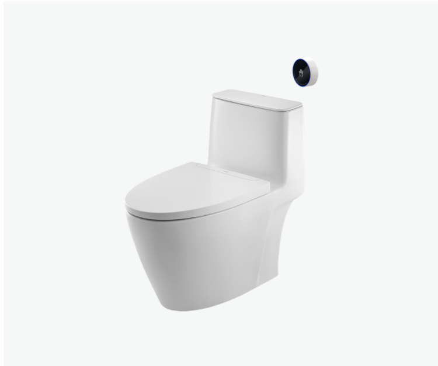
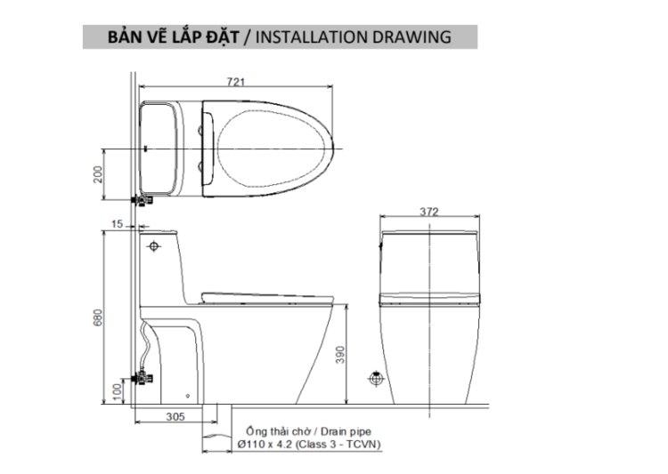

Bồn cầu 1 khối xả cảm ứng ACT‑902VN INAX thể hiện sự tinh tế trong thiết kế liền khối, phù hợp với không gian phòng tắm hiện đại và sang trọng. Thiết bị được trang bị hệ thống xả tự động không chạm, mang đến trải nghiệm tiện nghi và đảm bảo vệ sinh tối ưu. Chất liệu sứ cao cấp cùng lớp men Aqua Ceramic giữ cho bề mặt luôn sáng bóng, dễ dàng làm sạch và duy trì độ bền vượt trội theo thời gian.Thiết kế bồn cầu 1 khối xả cảm ứng ACT-902VNSản phẩm đáp ứng các tiêu chuẩn khắt khe về chất lượng, độ an toàn, đảm bảo độ bền, hiệu suất sử dụng và sự an tâm cho người dùng trong nhiều năm.Kiểu dáng bồn cầu 1 khối ACT-902VN gọn gàng, thanh thoát, thích hợp với nhiều phong cách phòng tắm, từ thiết kế hiện đại đến không gian cao cấp, đồng thời dễ dàng bố trí trong những phòng tắm có diện tích hạn chế.Thiết kế “Super smooth barrel” với thân bồn cầu liền mạch, bề mặt trơn láng, không góc cạnh, giúp hạn chế bám bẩn và dễ dàng lau chùi, đồng thời mang lại vẻ ngoài tinh tế, sang trọng cho không gian.Thiết kế liền khối kết hợp kiểu dáng mềm mại tạo sự thuận tiện khi sử dụng, đồng thời góp phần nâng cao thẩm mỹ và sự tiện nghi cho phòng tắm.Tính năng nổi bật của bồn cầu 1 khối xả cảm ứng ACT-902VNXả không chạm (Sensor Flush): Hệ thống xả tự động giúp hạn chế tiếp xúc trực tiếp, ngăn chặn vi khuẩn và nâng cao tiêu chuẩn vệ sinh trong quá trình sử dụng.Khả năng chống nước IP67: Module cảm biến được bảo vệ hoàn toàn trước môi trường ẩm ướt, đảm bảo bồn cầu vận hành ổn định và bền bỉ theo thời gian.Nắp đóng êm (Slow lowering seat): Cơ chế đóng êm giảm tiếng ồn, đồng thời bảo vệ nắp và thân bồn cầu, nâng cao trải nghiệm sử dụng cũng như độ bền sản phẩm.Pin sử dụng lâu: Hệ thống pin hỗ trợ hơn 30.000 lượt xả, đi kèm nút nhấn thay thế khi pin hết, đảm bảo hoạt động liên tục và tiện lợi cho người dùng.Công nghệ Powerful Vortex hai cửa xả: Công nghệ xả Powerful Vortex với hai cửa xả (một cửa xả, một cửa đẩy trợ lực) mạnh mẽ, xả sạch mọi chất bẩn.Video giới thiệu công nghệ Aqua Ceramic độc quyền của INAXVideo giới thiệu bồn cầu xả cảm ứngVideo hướng dẫn lắp đặt bồn cầu xả cảm ứngBản vẽ bồn cầu 1 khối xả cảm ứng ACT-902VNThông số kỹ thuậtChất liệuSứKiểu dáng1 khốiKích thước721 x 372 x 680 (mm) (Dài x Rộng x Cao)Tính năng và Công nghệ- Xả không chạm (Sensor Flush): Ngăn chặn vi khuẩn và tăng vệ sinh. - Kháng nước IP67: Cho module cảm biến, hoạt động ổn định trong môi trường ẩm. - Nắp đóng êm (Slow lowering seat): Giảm tiếng ồn. - Pin sử dụng lâu: (≥30.000 lượt xả), có nút nhấn thay thế khi pin hết. - Hệ thống xả Powerful Whirlpool Flush: Tạo dòng xoáy mạnh mẽ, xả sạch tối ưu. - Chống bám bẩn: MenAqua Ceramic và thiết kếborderless rim (vành không góc khuất). - Tiết kiệm nước: Lưu lượng xả khoảng 4.8 L mỗi lần.Thương hiệuINAXThiết kế- Kiểu dáng hiện đại, gọn gàng, phù hợp không gian phòng tắm nhỏ. - Thiết kế “Super smooth barrel” giúp bề mặt bên ngoài liền mạch, dễ lau chùi. - Sản phẩm đáp ứng tiêu chuẩn chất lượng quốc tế, phù hợp với nhiều phong cách không gian phòng tắm.Màu sắcTrắngKhác- Gợi ý sản phẩm đi kèm: chậu rửa đặt bàn AL-299V, AL-295V, chậu lavabo L-312V. - Hotline tư vấn và bảo hành: 18006633
Bồn cầu 1 khối xả cảm ứng ACT-902VN
Bàn cầu thương hiệu INAX.
Đã cập nhật danh sách yêu thích.
DANH MỤC: Bàn cầu
MÃ SẢN PHẨM: ACT-902VN
DEPTH: 721mm
HEIGHT: 680mm
WIDTH: 372mm
Bồn cầu 1 khối xả cảm ứng ACT‑902VN INAX thể hiện sự tinh tế trong thiết kế liền khối, phù hợp với không gian phòng tắm hiện đại và sang trọng. Thiết bị được trang bị hệ thống xả tự động không chạm, mang đến trải nghiệm tiện nghi và đảm bảo vệ sinh tối ưu. Chất liệu sứ cao cấp cùng lớp men Aqua Ceramic giữ cho bề mặt luôn sáng bóng, dễ dàng làm sạch và duy trì độ bền vượt trội theo thời gian.Thiết kế bồn cầu 1 khối xả cảm ứng ACT-902VNSản phẩm đáp ứng các tiêu chuẩn khắt khe về chất lượng, độ an toàn, đảm bảo độ bền, hiệu suất sử dụng và sự an tâm cho người dùng trong nhiều năm.Kiểu dáng bồn cầu 1 khối ACT-902VN gọn gàng, thanh thoát, thích hợp với nhiều phong cách phòng tắm, từ thiết kế hiện đại đến không gian cao cấp, đồng thời dễ dàng bố trí trong những phòng tắm có diện tích hạn chế.Thiết kế “Super smooth barrel” với thân bồn cầu liền mạch, bề mặt trơn láng, không góc cạnh, giúp hạn chế bám bẩn và dễ dàng lau chùi, đồng thời mang lại vẻ ngoài tinh tế, sang trọng cho không gian.Thiết kế liền khối kết hợp kiểu dáng mềm mại tạo sự thuận tiện khi sử dụng, đồng thời góp phần nâng cao thẩm mỹ và sự tiện nghi cho phòng tắm.Tính năng nổi bật của bồn cầu 1 khối xả cảm ứng ACT-902VNXả không chạm (Sensor Flush): Hệ thống xả tự động giúp hạn chế tiếp xúc trực tiếp, ngăn chặn vi khuẩn và nâng cao tiêu chuẩn vệ sinh trong quá trình sử dụng.Khả năng chống nước IP67: Module cảm biến được bảo vệ hoàn toàn trước môi trường ẩm ướt, đảm bảo bồn cầu vận hành ổn định và bền bỉ theo thời gian.Nắp đóng êm (Slow lowering seat): Cơ chế đóng êm giảm tiếng ồn, đồng thời bảo vệ nắp và thân bồn cầu, nâng cao trải nghiệm sử dụng cũng như độ bền sản phẩm.Pin sử dụng lâu: Hệ thống pin hỗ trợ hơn 30.000 lượt xả, đi kèm nút nhấn thay thế khi pin hết, đảm bảo hoạt động liên tục và tiện lợi cho người dùng.Công nghệ Powerful Vortex hai cửa xả: Công nghệ xả Powerful Vortex với hai cửa xả (một cửa xả, một cửa đẩy trợ lực) mạnh mẽ, xả sạch mọi chất bẩn.Video giới thiệu công nghệ Aqua Ceramic độc quyền của INAXVideo giới thiệu bồn cầu xả cảm ứngVideo hướng dẫn lắp đặt bồn cầu xả cảm ứngBản vẽ bồn cầu 1 khối xả cảm ứng ACT-902VNThông số kỹ thuậtChất liệuSứKiểu dáng1 khốiKích thước721 x 372 x 680 (mm) (Dài x Rộng x Cao)Tính năng và Công nghệ- Xả không chạm (Sensor Flush): Ngăn chặn vi khuẩn và tăng vệ sinh. - Kháng nước IP67: Cho module cảm biến, hoạt động ổn định trong môi trường ẩm. - Nắp đóng êm (Slow lowering seat): Giảm tiếng ồn. - Pin sử dụng lâu: (≥30.000 lượt xả), có nút nhấn thay thế khi pin hết. - Hệ thống xả Powerful Whirlpool Flush: Tạo dòng xoáy mạnh mẽ, xả sạch tối ưu. - Chống bám bẩn: MenAqua Ceramic và thiết kếborderless rim (vành không góc khuất). - Tiết kiệm nước: Lưu lượng xả khoảng 4.8 L mỗi lần.Thương hiệuINAXThiết kế- Kiểu dáng hiện đại, gọn gàng, phù hợp không gian phòng tắm nhỏ. - Thiết kế “Super smooth barrel” giúp bề mặt bên ngoài liền mạch, dễ lau chùi. - Sản phẩm đáp ứng tiêu chuẩn chất lượng quốc tế, phù hợp với nhiều phong cách không gian phòng tắm.Màu sắcTrắngKhác- Gợi ý sản phẩm đi kèm: chậu rửa đặt bàn AL-299V, AL-295V, chậu lavabo L-312V. - Hotline tư vấn và bảo hành: 18006633
DANH MỤC: Bàn cầu
MÃ SẢN PHẨM: ACT-902VN
DEPTH: 721mm
HEIGHT: 680mm
WIDTH: 372mm